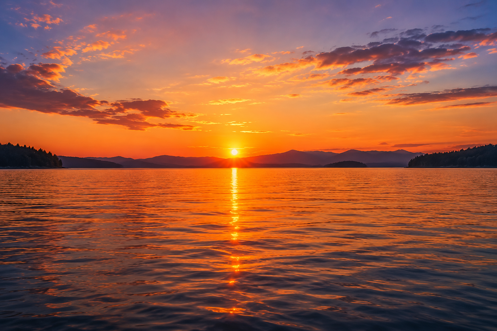
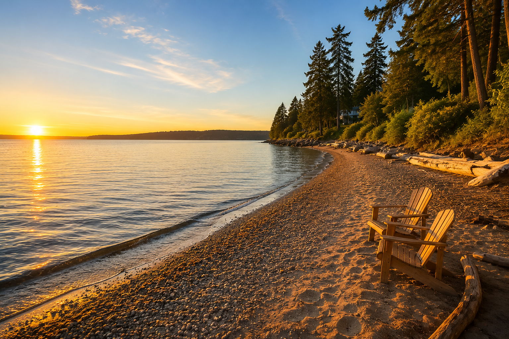
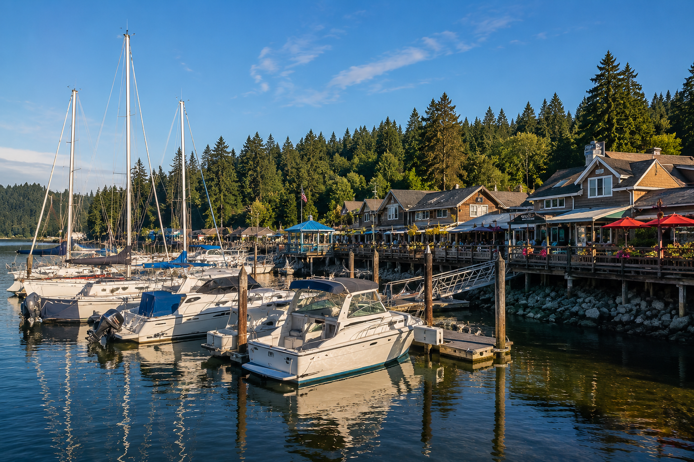
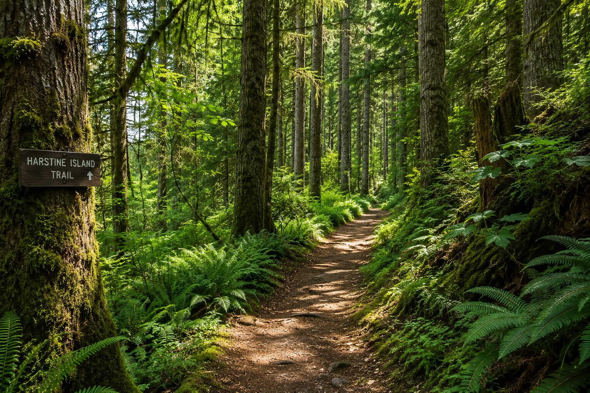

1 hour
Evening Sunset Cruise
$100
Relax on Case Inlet as the evening light settles over the South Sound.
Private, casual boat excursions for up to four guests with a USCG certified small-vessel captain.
Private trips for your group.
Safety equipment on board.
Alcoholic or non-alcoholic.
USCG certified, CPR/First Aid certified.
All trips are private. Times include round trip travel unless noted.

Relax on Case Inlet as the evening light settles over the South Sound.

About 30 minutes round trip plus beach time and/or hiking in Haley Park.

Pizza, seafood, burgers, or ice cream are within walking distance of the boat dock.

Explore nearby destinations like Harstine, Warm Beach, McMicken Island, or Joemma Beach.